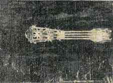
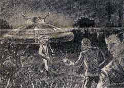
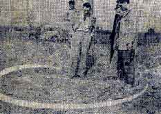
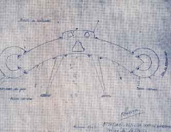
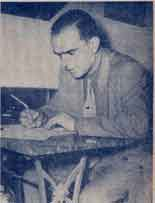

À Saint-Ambroix (France), plusieurs témoins voient 7 petits êtres qui s'enfuirent dans
un objet phosphorescent lorsqu'ils s'approchent. Il décolle immédiatement. On dit que l'on trouva des graines
inconnues à cet emplacement La Croix, 16 octobre 1954.
À Lewarde (France), dans le bois d'Erchin, Casimir Starovski (mineur) rencontre sur une route de campagne 1 être étrange, de petite
taille, à la silhouette volumineuse, avec de grands yeux obliques et le corps couvert de fourrure. Le petit être,
qui mesure moins de 1,20 m, a une tête volumineuse et porte une calotte brune qui prend la forme d'un bandeau de
quelques cm au-dessus de ses yeux. Les yeux exorbités ont un iris très petit ; le nez est plat ; les lèvres épaisses
et rouges. Le témoin ne voit cependant aucune soucoupe et l'être ne semblait porter aucune sorte d'appareil
respiratoire. Avant qu'il ne pense à l'arrêter, la créature a disparu Vallée, Anatomy 143Dominique Caudron rappelera l'explication d'un clochard Caudron, D.: "Pas de martien pour Casimir" ..
Dans l'Essex (Angleterre), le lieutenant James Saladin vole au-dessus de l'Estuaire du Thames près de Southend, pilotant un Meteor
Mark 8, remarque 3 objets qui s'approchent de lui. 2 des objets, l'un doré et l'autre argenté, volent de chaque côté
de son appareil, et un directement dans sa trajectoire de vol. Il soumet l'incident à la base aérienne Mysterious Britain.
Dessin retraçant l'observation dans le ciel varois Ganteaume, A: Var Matin

Dans le Var, et surtout dans l'espace aérien toulonnais, dans un ciel calme, des dizaines de personnes voient 1
phénomène traverser le ciel en direction du nord. À Saint Jean-du-Var (Toulon), M.
Thivelle voit un phénomène lumineux laissant autour de lui et derrière lui un halo phosphorescent irisé. D'autres
témoignages confirment la vision d'une espèce de boule de feu ce soir là, se dirigeant à grande vitesse de la mer
vers la montagne, pour disparaître derrière le Mont Faron (soit direction de Solliès) et selon une trajectoire
visuelle légèrement montante. Un phénomène de couleur verte, bleue et rouge, sous forme d'une boule plus ou moins
allongée. Le croquis joint à l'article de presse montre une forme de "cigare" ou de "fusée" courte avec un avant de
forme bombée. La "carlingue" ou corps du phénomène est éclairée par plusieurs rangées de hublots et l'arrière semble
en flammes. Des flammes qui se terminent en gerbes. Paul Fattici, lui, raconte qu'en fermant [son] cabanon, j'ai
aperçu un objet ayant la forme d'une boule de feu, venant de l'est et se dirigeant vers le Mont Coudon à une
vitesse considérable. A mon avis, l'objet devait évoluer à environ 1000 m de hauteur. J'ai l'habitude des
ballons-sondes et je puis affirmer que ce n'était guère ce que j'ai vu ce soir là ! Derrière la boule, ce
témoin remarquera une présence impressionnante de flammes se terminant en gerbes. L'ensemble paraissant rougeâtre.
La description de ce premier témoin est fort simple et il y figure peu de détails. Il estime sa taille apparente à
50 cm de long pour 15 cm de large. Ce même corps semblait posséder des raies ressemblant à des tuyères.
Olivier Baptistin (ancien conseiller municipal) témoigne lui de sa résidence de Solliès-Ville : j'ai vu un engin
de couleur rouge, émettant des flammes à l'arrière, volant de manière horizontale. Puis d'un coup, il piqua vers
Solliès-Pont en éteignant toute lumière. Il avait l'air d'être très haut. Il se dirigeait vers le nord sans
émettre le moindre bruit. Mme Dupont affirme avoir observé un phénomène semblable, le même jour et
à la même heure, selon une morphologie descriptive correspondante, mais sur une durée de 3 mn Mante, R.: Var-Matin République, 16 octobre 1954, pp. 1, 4 < Seray, Patrice: "Vague 1954 - L'affaire toulonnaise ou un cas sidérant...", CNEGU, décembre 2004..
A Biot (France), José
Casella (employé municipal) rentre chez lui à bicyclette, quand il trouve soudain devant lui, sur la route, 1
objet gris, semblant d'aluminium, de forme ovale, d'un diamètre de 5,5 m environ et d'une hauteur de 1 m, surmonté
d'un dôme et il émettait un siflement doux. Alors qu'il freine et que Casella se trouve à seulement à 6 m de lui,
l'objet décolle à très grande vitesse. Plusieurs personnes confirment l'observation Paris-Presse, France-Soir, 17 octobre 1954.
Reconstitution du récit des témoins de Hyères Var Matin

Trace supposée de la rencontre de Hyères Var Matin

Sur le "chemin long", une petite route menant au Palyvestre (Hyères-Base militaire), MM.
Repellini (tenancier d'un bar à Toulon) et Ottaviani (mécanicien de la marine marchande) roulent quand le chauffeur,
afin de satisfaire à un besoin naturel, arrête son véhicule sur le bas-côté, et en descend accompagné de son ami.
C'est alors que, s'enfonçant dans les fourrés, ils aperçoivent une soucoupe métallique. Ils voient en
descendre un passager et une conversation s'engage... Le "pilote" parle un français "pur" et semble vêtu comme un
simple pilote d'hélicoptère. Lors de la conversation qui s'ensuit il demande aux témoins où se trouve la base du
Palyvestre à Hyères. Puis il regagne son engin pour décoller et s'évanouir dans les airs. Par la suite une enquête
est menée pendant plusieurs jours par la police puis des officiers des services de sécurité de l'air. Ottaviani
fournit un schéma détaillé de la soucoupe : Il s'agit d'une coupe de l'engin qui faisait 4 m de diamètre. Les
béquilles qui le soutiennent au sol sont plus vraisemblablement au nombre de 3 afin d'en assurer une certaine
stabilité. Moi, je n'en vis que 2. L'homme que nous avons vu, était coiffé d'un casque et revêtu de verre. Il
descendit par une petite porte que l'on voit au centre de l'appareil, ceci à l'aide d'une courte échelle que je n'ai
pas reproduite. Il remonta par le même chemin et referma la porte. Alors, de la coupole habitacle il a du mettre en
marche ses "réacteurs" qui entraînent un mouvement giratoire, l'anoïde encerclant le centre de la "soucoupe" qui
lui, reste immobile. Dessin d'Ottaviani Var Matin

Ottaviani dessinant la soucoupe Var Matin

La force développée par cet anoïde tournant et par les gaz s'échappant des tuyères latérales, permet à l'engin de
s'élever verticalement grâce aux 2 antennes que l'on voit dessinées, antennes jouant le rôle, sans doute, analogue
à celui de nos radars. La coupole, bien qu'étroite, permet à 2 passagers de séjourner à l'intérieur. Il ne
reconnait pas à son tour les traces au sol trouvée, sous forme d'herbe brûlée, cependant, alors que Repellini et ne
se souvient pas que l'engin ait reposé sur 2 béquilles, et refuse de signer sa déposition Var-Matin République, 17 octobre 1954, pp. 1, 8 < Seray, Patrice: "Vague 1954 - L'affaire toulonnaise ou un cas sidérant...", CNEGU, décembre 2004..
À Toulon, un témoin (boucher) revenant de Hyères en
compagnie d'un ami observe un engin métallique s'élevant d'une rangée d'arbres. L'objet gagne rapidement de la
hauteur et disparait alors que le véhicule des témoins vient de s'arrêter en bordure de la route du "Chemin Long".
Un autre témoin, M. Gandolphe (jardinier à Hyères), confirme les faits et affirme avoir vu un engin montant dans le
ciel, sans faire de bruit, mais à une vitesse vertigineuse. Il compara sa forme à celle d'un immense champignon
Var-Matin République, 18 octobre 1954, pp. 1, 5 < Seray, Patrice: "Vague 1954 - L'affaire toulonnaise ou un cas sidérant...", CNEGU, décembre 2004..
À Angles (Vendée, France), 1 fermier Décédé
au moins en 1997 voit 1 objet brillant descendre presque jusqu'au sol. Alors qu'il tente de s'en
approcher, l'objet produit une intense écran de lumière et disparaît sans un bruit. A Angles, plusieurs
personnes ont observé la scène La Croix, 16 octobre 1954 < Figuet, Michel < Choloux, Jérôme: "2. La vague de 1954" in "Les OVNIs en Vendée", Les Mystères de Vendée, 2007.
À Méral (France), 1 fermier observe l'atterrissage de 1 sphère orange ; il s'en
approche, constatant qu'elle a la forme d'un dôme aplati, d'un diamètre de 5,5 m et qu'elle émet une lumière
aveuglante illuminant la campagne sur un rayon de 200 m. Elle est transparente et, à l'intérieur, on peut voir
une silhouette sombre. Après être restée au niveau du sol pendant , elle s'envole vers le nord,
tandis qu'un nuage brillant descend doucement
vers le sol à l'emplacement (qu'elle venait d'occuper). En rentrant chez lui, le témoin constaté que ses
vêtements sont couverts d'une pellicule blanche de subtance adhésive, relativement semblable à de la paraffine
La Croix, 16 octobre 1954.
À Saint-Germain-du-Bois (France), M. Lonjarret observe
1 objet lumineux orange au sol près d'un champ Quincy.
À Bois de Chazey (France), M. André Cognard, venant de
Gueugnon, est aveuglé par une lumière au moment où sa voiture est survolée, à basse
altitude, par un objet en forme de disque Vallée, Jacques: Anatomy 130.
À Saint-Romain (France), M. B. voit un engin circulaire
de la forme d'une assiette retournée. Au même moment, le moteur de sa moto cale. Dans le même secteur, un
ingénieur observe un objet lumineux descendant rapidement Vallée: Anatomy 130.
A Bois de Chazey (France), Au sud de Gueugnon, MM. Jaennet et Garnier voient 1 boule de feu rougeâtre survolant à
basse altitude leur voiture dont le moteur s'est arrêté et les phares se sont éteints Vallée, J., Anatomy 130.
Sur la route reliant Thieulloy-la-Ville (France) à Beauvais, M. Covemacker voit 1 objet survoler sa voiture. Au même
moment, ses phares s'éteignent. L'objet continue vers le nord, semblant suivre 1 train.